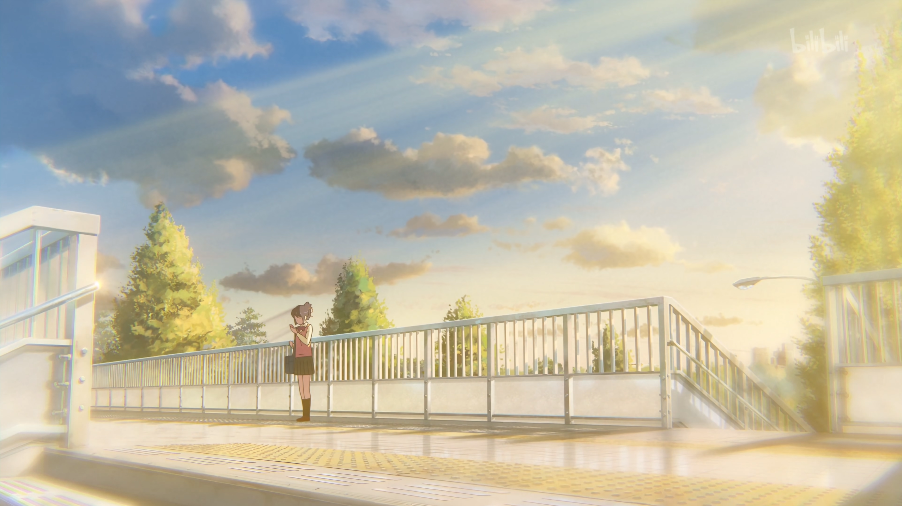
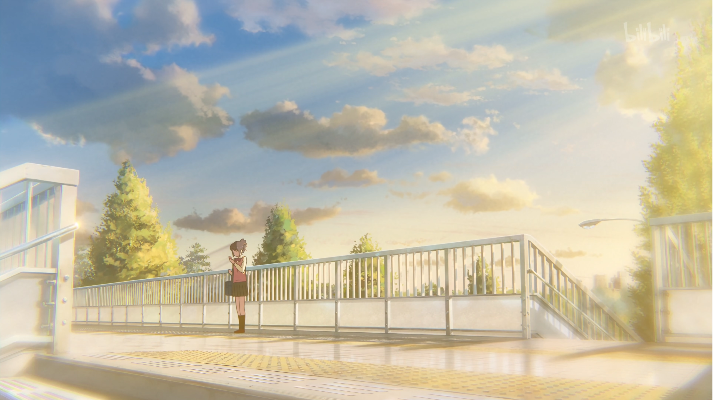

《你的名字。》：视听盛宴
多年以后，面对生活的一地鸡毛，dk将会回想起，大一点开《你的名字。》的那个遥远的下午。
起源
《你的名字。》这部动画电影对我有着非常深的影响，它在事实上成为了我的二次元入宅动画。在2022年的春季，正值我的大一下学期，课程的安排使我每周五的下午至晚上有整块的时间休息，同时北京春季的花粉过敏也将我锁在了宿舍，于是每周五我都会寻找一部电影来消磨时光，在这种情况下，我在学期中的某一周点开了《你的名字。》。
其实在此之前，我也看过这部作品、《天气之子》以及许多动画电影，但或许是此前观看时年纪未到，总之没有太多感触，对动漫也没有太深入地了解。但在这次观看过程中，我经历了从对电影画面的精致程度的惊叹到对剧情推进之流畅的折服，最后在不知不觉中落入了新海诚与野田洋次郎所共同建造的视听盛宴中，沉浸式地体会了主角们的感动。
故事与叙事节奏
《你的名字。》的故事在当时看来也不算是具有很大创新性的题材，泷和三叶在相隔三年的时间线上在梦中互换身体，三叶所在的糸守镇遭遇了千年一遇的陨石撞击，包括三叶在内的小镇大部分人都在灾难中去世，泷在意识到不再与三叶互换身体后想要寻找三叶却意外发现糸守镇三年前的灾难。借助神明等奇幻的力量，泷重返三年前三叶的身体之中并最终让三叶得以拯救小镇的人，也使得自己能与三叶在未来相遇。
电影的叙事采用了时空类故事会使用的、前期埋藏大量伏笔的方式（类似于命运石之门）。在前十几分钟通过对三叶的日常生活和神社塑造了三叶的性格：软弱、不自信，然后中间伴随着快节奏的《前前前世》使用蒙太奇闪过两人交换的日常，主题曲戛然而止时便开始推进电影的核心事件——神社与陨石，在这里暗示神社就是时空穿越的关键。在灾难发生后，主视角回到泷身上，当泷不再与三叶交换身体后总会想见她，这里进入故事的低谷部分，随着泷不断地发现小镇的真相，情绪不断向下沉，在遇难者名单中发现三叶的名字时达到最低点。而后随着男主想起神社的作用，并前往神社、喝下口嚼酒、穿越为三叶再次回到神社相见，情绪不断上升，同时这里也是对两人之间感情的第一次正面表现。表明心意后三叶改变了自己，成功拯救了小镇人，情绪进入小高潮，但两人未能相识的遗憾仍横在观众心中。而最后《没什么大不了》的鼓声一步步推向高潮，直到结局进入最高潮。
电影的故事节奏如上是一部非常典型的商业片节奏，它试图调动观众的情绪从小高潮到低谷再到高潮，并最终放慢了故事节奏，使得最高潮延迟到来，达到一种接近延迟满足的效果。而电影极其优秀的作画和完美的音乐使得它成功实现了对观众的情绪的调动。
画面
作为新海诚最为知名的作品，《你的名字。》在画面上无可挑剔，达到了每一帧都可以作为壁纸的水平。全片主要使用蓝色系，在表现糸守镇时辅以绿色，给人以一种阳光、富有生命力的感觉，而在涉及到奇幻元素时，画面以橙红色、蓝色为主，与黄昏之时的情节相契合，给人以一种梦幻但又异常美好的感觉。
音乐
在音乐上，作为一个并不高明的观众，我至今仍未发现另一部能将音乐与电影的节奏、意境结合得如此完美的作品。事实上，电影的节奏完全是由所音乐把控，开局的快节奏是由《前前前世》所调动，中期随着《御神体》蜿蜒缠绕的旋律表现了时空交织的奇幻色彩，同时又引导观众的情绪向下落，为灾难的发生铺垫情绪。而后《秋祭り》低沉的音调仿佛使观众情绪更加低迷，《図書館》缓慢地让全篇情绪达到最低点。随后泷前往神社，《御神体へ再び》采用快速重复的旋律将情绪不断提升，紧接着，便是那段神级演出——《三叶的主题曲》。在这一段演出中第一次正面叙述三叶对泷的情感，独自一人坐上前往东京的列车，音乐的旋律就像是三叶的内心，起起伏伏，不断调动观众情绪上扬。《黄昏之时》和《火花》延续了这一情绪，将剧情推向高潮，但同时也并没有一次性释放，而是保留了一定悬念。在最后，《没什么大不了》电影版的前奏鼓声插入仿佛是在不断挑起观众最后的情绪，随着两人最终得以相见全片情绪达到最高潮。
三叶的主题曲
《你的名字。》之所以让我如此震撼，一个重要原因便是《三叶的主题曲》的那段演出。在这段演出中，音乐完美地表现了三叶鼓起勇气，花光所有积蓄前往东京见泷，但又忐忑不安的内心。音乐中带有一种难以言表的悲伤情绪，让观众沉浸地代入三叶的视角，满怀期待但又一次一次的落空，以至于即使已经听过接近千遍，再听到它的旋律，我的心头仍会颤抖，脑海中浮现出三叶紧张但又期待地在找寻的画面，感受到这份酸涩。
同时，在这一段演出中，三叶第一次展现出了她的改变。从我的认识来看，动画中的人物要想立体起来，就需要有人物弧光的变化，简单来说人物不应该是单薄的人设，而是随着剧情推进进行成长。三叶在没有遇见泷之前，因为父亲是糸守镇的镇长但从小却接受外婆的传统教育，承担镇里祭祀活动，同时接受镇里的资助而感到自卑，在上下学路上遇见同学都抬不起头。而在泷的影响下，三叶逐渐开始摆脱了这一困扰，鼓起勇气去见泷以及在最后能够勇敢地向父亲表明自己的态度，这实际上就已经证明了泷已经成为了三叶的重要之人，这比直接用言语去表达更加深刻和细腻。
需要指出的是，相比于对三叶的细腻刻画，电影对于泷的刻画显然没有达到相同水平，从影片开头到结尾，泷的性格与行为始终没有发生改变，更多需要靠直白的台词来表达泷的情感变化，这点略显不足。
 

结语
有人说《你的名字。》是被过誉的，它只是一部非常成功的流水线商业片。但我不这么认为，诚然。它在剧情上有着公式化、流水线的嫌疑，但它打动人心的关键并不在剧情走向，而是在被音乐调动的节奏与情感，在精美的画面与音乐的完美融合，在细腻人物刻画之中，它是真正的能够触碰到观众的内心的视听盛宴。